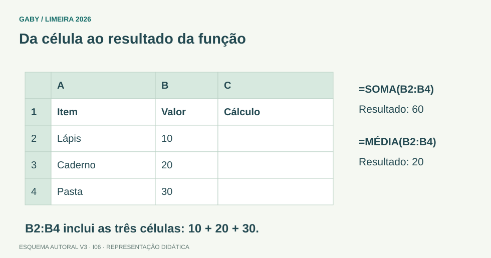

Objetivos do módulo
- Construir fórmulas corretas.
- Aplicar funções usuais.
- Entender precedência e critérios.
- Reconhecer os operadores aritméticos, de comparação e de concatenação e a ordem em que o Excel os calcula.
- Ler a sintaxe das funções de soma, contagem, média, lógica, texto, data e pesquisa e prever o resultado.
- Identificar os valores de erro, a referência circular e o efeito do modo de cálculo manual.
Da célula ao resultado da função

Descrição em texto do esquema
- B2:B4: 10, 20 e 30
- SOMA: SOMA(B2:B4) = 60
- MÉDIA: MÉDIA(B2:B4) = 20
Oficina visual · aplique o esquema
Com A1=4, A2=6 e A3=10, calcule =SE(MÉDIA(A1:A3)>=7;"Meta";"Rever").
Atividade autoral complementar da V3. Registre sua resposta; a resolução está no arquivo de gabarito e revisão.
Mapa do conteúdo
1. Operadores e precedência
Referência desta aula: Excel do Microsoft 365 para Windows em português do Brasil. Nessa configuração, os nomes das funções são em português, o ponto e vírgula (;) separa os argumentos e a vírgula é o separador decimal (escreve-se 2,5, e não 2.5).
Toda fórmula começa com o sinal de igual
Para o Excel calcular, a entrada da célula precisa começar com o sinal de igual (=). Digitar =B2+B3 mostra o resultado da soma; digitar B2+B3, sem o sinal, deixa na célula apenas esse texto. O mesmo vale para funções: SOMA(B2:B4) sem o = não calcula nada.
Depois do =, a fórmula pode combinar quatro tipos de elemento:
- constantes: valores digitados diretamente, como 2 ou "Aprovado";
- referências: endereços de células, como B2, ou de intervalos, como B2:B4;
- operadores: sinais como + e *;
- funções: cálculos prontos, como SOMA e SE.
Uma referência é formada pelas letras da coluna seguidas do número da linha, sem nada no meio. Depois da coluna Z vêm AA, AB, AC e assim por diante; por isso AB7 é uma referência válida (coluna AB, linha 7) e =AB7^AB8 é uma fórmula bem escrita. Já =B[C2] e =(B+C)2 não são aceitas: colchetes não fazem parte do endereço de uma célula, letras de coluna não se somam para formar um endereço, e entre o parêntese e o 2 falta um operador. Uma função também pode receber uma única célula: =SOMA(B2:D4)+SOMA(C3) é válida.
Operadores aritméticos
| Operador | Operação | Exemplo | Resultado |
|---|---|---|---|
| + | adição | =7+5 | 12 |
| - | subtração (ou sinal negativo, como em -3) | =7-5 | 2 |
| * (asterisco) | multiplicação | =7*5 | 35 |
| / (barra) | divisão | =7/5 | 1,4 |
| ^ (acento circunflexo) | potência, também chamada exponenciação | =7^2 | 49 |
| % (porcentagem) | divide o número por 100 | =80*25% | 20 |
No último exemplo, 25% vale 0,25, e 80 × 0,25 = 20. O ^ é potência, não multiplicação: =5^2 é 5 × 5 = 25, e não 10. Os sinais × e ÷ não são operadores do Excel: a multiplicação usa * e a divisão usa /.
Operadores de comparação
Comparam dois valores e devolvem VERDADEIRO ou FALSO. Aparecem principalmente no teste da função SE e nos critérios de CONT.SE e SOMASE. Nos exemplos, A1 = 8 e B1 = 5.
| Operador | Significado | Exemplo | Resultado |
|---|---|---|---|
| = | igual a | =A1=B1 | FALSO |
| <> | diferente de | =A1<>B1 | VERDADEIRO |
| > | maior que | =A1>B1 | VERDADEIRO |
| < | menor que | =A1<B1 | FALSO |
| >= | maior ou igual a | =A1>=8 | VERDADEIRO |
| <= | menor ou igual a | =A1<=B1 | FALSO |
Em =A1=B1 há dois sinais de igual com papéis distintos: o primeiro abre a fórmula; o segundo compara os valores. O operador <> (menor e maior juntos) é o "diferente de"; não confunda com >= e <=, que incluem a igualdade.
Operador de concatenação (&)
Concatenar é juntar textos em sequência. O operador é o "e comercial" (&). Com D2 = Marta e E2 = Lopes:
=D2&E2resulta em MartaLopes: nada é inserido entre os textos;=D2&" "&E2resulta em Marta Lopes: o espaço entre aspas é um texto como outro qualquer;=D2+E2resulta em #VALOR!, porque + é operador aritmético e não junta textos.
As funções que também concatenam estão na seção 7.
Ordem de precedência
Quando a fórmula tem mais de um operador, o Excel não calcula simplesmente da esquerda para a direita. Ele segue esta ordem padrão de cálculo:
| Ordem | Operador | Descrição |
|---|---|---|
| 1ª | : (dois-pontos) e demais operadores de referência | formam intervalos, como B2:B4 |
| 2ª | - | negação: o sinal negativo, como em -3 |
| 3ª | % | porcentagem |
| 4ª | ^ | potência |
| 5ª | * e / | multiplicação e divisão |
| 6ª | + e - | adição e subtração |
| 7ª | & | concatenação |
| 8ª | = <> < > <= >= | comparação |
Operadores do mesmo nível (por exemplo, * e /) são calculados da esquerda para a direita. Os parênteses alteram a ordem padrão: o que está dentro deles é calculado primeiro. Aspas, apóstrofo, & e # não têm esse papel.
| Fórmula | Como o Excel calcula | Resultado |
|---|---|---|
=2+3*4 | 3*4 = 12; depois 2+12 | 14 |
=(2+3)*4 | 2+3 = 5; depois 5*4 | 20 |
=10-4/2 | 4/2 = 2; depois 10-2 | 8 |
=(10-4)/2 | 10-4 = 6; depois 6/2 | 3 |
=2*3^2 | 3^2 = 9; depois 2*9 | 18 |
=(2*3)^2 | 2*3 = 6; depois 6^2 | 36 |
=12/2*3 | mesmo nível, da esquerda para a direita: 12/2 = 6; depois 6*3 | 18 |
=2+3>4 | 2+3 = 5; depois a comparação 5>4 | VERDADEIRO |
=-3^2 | a negação vem antes da potência: (-3)^2 | 9 |
2. Funções básicas
Uma função tem nome, parênteses e argumentos: =NOME(argumento1;argumento2). O ponto e vírgula separa argumentos; os dois-pontos formam um intervalo. Assim, =SOMA(A1:A5) soma cinco células (de A1 até A5), e =SOMA(A1;A5) soma só duas (A1 e A5). Na sintaxe, argumentos entre colchetes, como [número2], são opcionais.
Nos exemplos da tabela, B2:B6 contém 8, 3, 10, 3 e 11.
| Função | Sintaxe | O que faz | Exemplo | Resultado |
|---|---|---|---|---|
| SOMA | SOMA(número1;[número2];…) | soma os valores | =SOMA(B2:B6) | 35 |
| MÉDIA | MÉDIA(número1;[número2];…) | média aritmética: a soma dividida pela quantidade de números | =MÉDIA(B2:B6) | 7 |
| MED | MED(número1;[número2];…) | mediana: o valor central dos números postos em ordem | =MED(B2:B6) | 8 |
| MÁXIMO | MÁXIMO(número1;[número2];…) | maior valor | =MÁXIMO(B2:B6) | 11 |
| MÍNIMO | MÍNIMO(número1;[número2];…) | menor valor | =MÍNIMO(B2:B6) | 3 |
| MAIOR | MAIOR(matriz;k) | k-ésimo maior valor | =MAIOR(B2:B6;2) | 10 |
| MENOR | MENOR(matriz;k) | k-ésimo menor valor | =MENOR(B2:B6;3) | 8 |
| CONT.NÚM | CONT.NÚM(valor1;[valor2];…) | conta as células que contêm números | =CONT.NÚM(B2:B6) | 5 |
SOMA e células com texto
SOMA ignora os textos que estiverem nas células referenciadas e soma apenas os números. O operador + não faz isso. Com C2 = 40, C3 = pendente (um texto) e C4 = 25:
=SOMA(C2:C4)resulta em 65;=C2+C3+C4resulta em #VALOR!, porque o Excel não consegue somar a palavra "pendente".
MÉDIA não é MED
MÉDIA soma os números e divide pela quantidade deles. MED devolve a mediana: o valor que fica no meio quando os números são postos em ordem. Se a quantidade de números é par, a mediana é a média dos dois centrais. Apesar do nome parecido, MED não é abreviação de MÉDIA.
| Fórmula | Cálculo | Resultado |
|---|---|---|
=MÉDIA(7;2;30) | (7+2+30)/3 = 39/3 | 13 |
=MED(7;2;30) | em ordem: 2, 7, 30; o valor central é 7 | 7 |
=MED(2;4;6;20) | quatro números; os centrais são 4 e 6; (4+6)/2 | 5 |
Em intervalos, MÉDIA e MED ignoram células vazias, textos e valores lógicos, mas contam o zero. Com D2 = 10, D3 vazia e D4 = 20, =MÉDIA(D2:D4) resulta em 15 (30 dividido por 2). Se D3 contiver 0, o resultado passa a 10 (30 dividido por 3). Pela mesma regra, um cabeçalho de texto incluído no intervalo não muda a média; ainda assim, o intervalo correto é o que contém só os dados.
MÁXIMO, MÍNIMO, MAIOR e MENOR
MÁXIMO e MÍNIMO devolvem os extremos. MAIOR e MENOR pedem um segundo argumento, k, que indica a posição desejada na ordem. Com os mesmos dados (8, 3, 10, 3, 11): =MAIOR(B2:B6;1) é o maior valor (11), =MAIOR(B2:B6;2) é o segundo maior (10) e =MAIOR(B2:B6;3) é o terceiro (8). Valores repetidos ocupam posições seguidas: =MENOR(B2:B6;1) e =MENOR(B2:B6;2) resultam ambos em 3, porque o 3 aparece duas vezes.
MÍNIMO trabalha com números e não tem relação com letras minúsculas; para isso existe a função MINÚSCULA (seção 7).
Funções de contagem
Estas funções contam células; não somam valores. Com E2 = 15, E3 = ok (texto), E4 vazia, E5 = 0 e E6 = falta (texto):
| Função | O que conta | Exemplo | Resultado |
|---|---|---|---|
| CONT.NÚM(valor1;[valor2];…) | células com números | =CONT.NÚM(E2:E6) | 2 (E2 e E5) |
| CONT.VALORES(valor1;[valor2];…) | células não vazias, com qualquer conteúdo: número, texto, valor lógico ou erro | =CONT.VALORES(E2:E6) | 4 |
| CONTAR.VAZIO(intervalo) | células vazias | =CONTAR.VAZIO(E2:E6) | 1 (E4) |
O zero é um número digitado: entra em CONT.NÚM e em CONT.VALORES e não é contado como vazio.
SUBTOTAL e listas filtradas
SUBTOTAL faz um cálculo (soma, média, contagem e outros) considerando apenas as linhas que continuam visíveis depois de um filtro. Sintaxe: SUBTOTAL(núm_função;ref1;[ref2];…). O primeiro argumento é um código que escolhe o cálculo: 1 para MÉDIA, 2 para CONT.NÚM, 3 para CONT.VALORES, 4 para MÁXIMO, 5 para MÍNIMO e 9 para SOMA, entre outros.
Exemplo: F2:F5 contém 100, 200, 300 e 400, e um filtro deixa visíveis apenas as linhas de 100 e 300.
=SUBTOTAL(9;F2:F5)resulta em 400 (100 + 300);=SOMA(F2:F5)continua resultando em 1000, porque SOMA calcula sobre todas as células do intervalo, inclusive as que o filtro escondeu. O mesmo acontece com SOMASE e CONT.VALORES.
Linhas escondidas por filtro ficam sempre fora do SUBTOTAL. Para linhas ocultadas manualmente, depende do código: de 1 a 11, elas entram no cálculo; de 101 a 111 (por exemplo, 109 para SOMA), são ignoradas.
3. Função SE
SE testa uma condição e retorna um valor se ela for verdadeira e outro se for falsa. Sintaxe: SE(teste_lógico;valor_se_verdadeiro;[valor_se_falso]). Exemplo: =SE(A1>=60;"Aprovado";"Reprovado"). Com A1 = 72, o teste 72>=60 é verdadeiro e o resultado é Aprovado; com A1 = 45, o resultado é Reprovado. Na referência desta aula, o separador de argumentos é o ponto e vírgula.
Textos escritos dentro da fórmula ficam entre aspas duplas; números e referências não levam aspas. Sem as aspas, o Excel entende Aprovado como um nome que ele não conhece e mostra o erro #NOME?.
O teste pode usar qualquer operador de comparação. Com D2 = 120 e D3 = 120, =SE(D2<>D3;"Divergente";"Confere") resulta em Confere, porque "120 diferente de 120" é falso.
SES: vários testes em sequência
SES verifica várias condições na ordem em que foram escritas e retorna o valor ligado à primeira que for verdadeira. Sintaxe: SES(teste_lógico1;valor_se_verdadeiro1;[teste_lógico2;valor_se_verdadeiro2];…). Com A1 = 7,5, =SES(A1>=9;"Ótimo";A1>=7;"Bom";A1<7;"Rever") resulta em Bom: o primeiro teste (7,5>=9) é falso, o segundo (7,5>=7) é verdadeiro e a função para ali.
Funções lógicas E, OU e NÃO
Retornam VERDADEIRO ou FALSO e servem para montar testes compostos.
| Função | Regra | Exemplo | Resultado |
|---|---|---|---|
| E(lógico1;[lógico2];…) | VERDADEIRO somente se todos os argumentos forem verdadeiros | =E(7>3;2>9) | FALSO (o segundo teste é falso) |
| E | =E(7>3;9>2) | VERDADEIRO | |
| OU(lógico1;[lógico2];…) | VERDADEIRO se pelo menos um argumento for verdadeiro | =OU(7<3;9>2) | VERDADEIRO (o segundo teste é verdadeiro) |
| OU | =OU(7<3;2>9) | FALSO (nenhum é verdadeiro) | |
| NÃO(lógico) | inverte o valor lógico | =NÃO(4>1) | FALSO (4>1 é verdadeiro) |
| NÃO | =NÃO(4<1) | VERDADEIRO |
Dentro do SE: com B2 = 8 (nota) e C2 = 70 (frequência), =SE(E(B2>=6;C2>=75);"Aprovado";"Reprovado") resulta em Reprovado, porque a segunda condição (70>=75) é falsa e E exige todas. Trocando E por OU, o resultado seria Aprovado, pois bastaria uma condição verdadeira.
4. Funções com critério
CONT.SE conta células que atendem a um critério, por exemplo =CONT.SE(B2:B20;">=80"). SOMASE soma valores associados a um critério. É importante diferenciar intervalo de critério e intervalo de soma.
| Função | Sintaxe | O que faz |
|---|---|---|
| CONT.SE | CONT.SE(intervalo;critérios) | conta as células do intervalo que atendem ao critério |
| SOMASE | SOMASE(intervalo;critérios;[intervalo_soma]) | testa o critério em intervalo e soma os valores correspondentes de intervalo_soma; sem o terceiro argumento, soma o próprio intervalo |
| MÉDIASE | MÉDIASE(intervalo;critérios;[intervalo_média]) | igual a SOMASE, mas calcula a média dos valores selecionados |
| CONT.SES | CONT.SES(intervalo_critérios1;critérios1;[intervalo_critérios2;critérios2];…) | conta as linhas que atendem a todos os critérios |
| SOMASES | SOMASES(intervalo_soma;intervalo_critérios1;critérios1;[intervalo_critérios2;critérios2];…) | soma os valores das linhas que atendem a todos os critérios |
Como escrever o critério: textos e expressões com operador ficam entre aspas ("RH", ">=50"); um número sozinho dispensa aspas (50).
Dados dos exemplos:
| Linha | A (Setor) | B (Situação) | C (Valor) |
|---|---|---|---|
| 2 | RH | Pago | 50 |
| 3 | TI | Pago | 80 |
| 4 | RH | Aberto | 70 |
| 5 | RH | Pago | 30 |
| 6 | TI | Aberto | 20 |
| Fórmula | Linhas selecionadas | Resultado |
|---|---|---|
=CONT.SE(A2:A6;"RH") | 2, 4 e 5 | 3 |
=CONT.SE(C2:C6;">=50") | 2, 3 e 4 (valores 50, 80 e 70) | 3 |
=SOMASE(A2:A6;"RH";C2:C6) | 2, 4 e 5: 50 + 70 + 30 | 150 |
=SOMASE(C2:C6;">=50") | sem intervalo_soma, soma o próprio intervalo: 50 + 80 + 70 | 200 |
=MÉDIASE(A2:A6;"RH";C2:C6) | 2, 4 e 5: 150 dividido por 3 | 50 |
=CONT.SES(A2:A6;"RH";B2:B6;"Pago") | 2 e 5 (RH e Pago na mesma linha) | 2 |
=SOMASES(C2:C6;A2:A6;"RH";B2:B6;"Pago") | 2 e 5: 50 + 30 | 80 |
Nas funções com S no final (CONT.SES, SOMASES), a linha só entra no resultado quando todos os critérios são atendidos nela ao mesmo tempo. A linha 4 é do RH, mas está Aberto; a linha 3 está Pago, mas é de TI. Nenhuma das duas entra. Somar todo o RH (150) ou tudo que está Pago (160) são erros típicos.
Atenção à ordem dos argumentos: em SOMASE, o intervalo de soma é o último; em SOMASES, é o primeiro.
Se nenhuma célula atende ao critério, CONT.SE e SOMASE resultam em 0, mas MÉDIASE resulta em #DIV/0!, pois não há valores para dividir. É o caso de =MÉDIASE(A2:A6;"Compras";C2:C6).
5. Referências dentro das fórmulas
Ao copiar fórmula com taxa fixa, use referência absoluta. Ex.: =A2*$F$1 para multiplicar cada valor por uma taxa guardada em F1.
6. Funções matemáticas
ARRED: arredondar
Sintaxe: ARRED(número;núm_dígitos). O segundo argumento informa quantas casas decimais devem ficar. O Excel olha o algarismo seguinte: de 0 a 4, mantém a última casa; de 5 a 9, aumenta essa casa em uma unidade.
| Fórmula | Raciocínio | Resultado |
|---|---|---|
=ARRED(7,468;2) | ficam duas casas; a terceira é 8, então o 6 sobe para 7 | 7,47 |
=ARRED(7,464;2) | a terceira casa é 4, então o 6 fica | 7,46 |
=ARRED(7,468;1) | fica uma casa; a segunda é 6, então o 4 sobe para 5 | 7,5 |
=ARRED(7,468;0) | nenhuma casa decimal; a primeira é 4 | 7 |
=ARRED(1284;-2) | núm_dígitos negativo arredonda à esquerda da vírgula: aqui, para a centena | 1300 |
Arredondar não é truncar: apenas cortar 7,468 na segunda casa daria 7,46, mas ARRED retorna 7,47. Note também que ARRED altera o valor; já formatar a célula com menos casas decimais muda só a exibição.
ABS e RAIZ
- ABS(número) retorna o valor absoluto, isto é, o número sem o sinal.
=ABS(-27)resulta em 27;=ABS(27)também resulta em 27;=ABS(10-45)resulta em 35. - RAIZ(número) retorna a raiz quadrada positiva.
=RAIZ(144)resulta em 12, porque 12 × 12 = 144 (nunca -12). Com número negativo, como em=RAIZ(-144), o resultado é o erro #NÚM!. Não confunda com elevar ao quadrado:=12^2resulta em 144.
MOD e QUOCIENTE
Na divisão inteira de 23 por 4, cabem 5 grupos de 4 e sobram 3: 23 = 5 × 4 + 3. Cada função devolve uma parte dessa conta.
| Fórmula | O que retorna | Resultado |
|---|---|---|
=23/4 | a divisão completa | 5,75 |
=QUOCIENTE(23;4) | a parte inteira da divisão; sintaxe QUOCIENTE(numerador;denominador) | 5 |
=MOD(23;4) | o resto da divisão; sintaxe MOD(número;divisor) | 3 |
=MOD(20;4) | divisão exata: não sobra nada | 0 |
Uso comum de MOD: =MOD(A1;2) resulta em 0 quando A1 é par e em 1 quando é ímpar. Se o divisor for 0, MOD resulta em #DIV/0!.
PRODUTO e SOMARPRODUTO
PRODUTO(número1;[número2];…) multiplica todos os argumentos. =PRODUTO(5;2;7) resulta em 70 (5 × 2 × 7); a soma dos mesmos números seria 14.
SOMARPRODUTO(matriz1;[matriz2];…) multiplica os valores que ocupam a mesma posição em cada intervalo e depois soma esses produtos. É a conta de "quantidade vezes preço, somando tudo".
| Linha | B (Quantidade) | C (Preço) | Produto da linha |
|---|---|---|---|
| 2 | 3 | 4 | 12 |
| 3 | 5 | 10 | 50 |
| 4 | 2 | 25 | 50 |
=SOMARPRODUTO(B2:B4;C2:C4) resulta em 112 (12 + 50 + 50). Não é o mesmo que multiplicar as somas: =SOMA(B2:B4)*SOMA(C2:C4) daria 10 × 39 = 390. Os intervalos precisam ter o mesmo tamanho; se não tiverem, o resultado é #VALOR!.
7. Funções de texto
Juntar textos: &, CONCAT e CONCATENAR
Além do operador & (seção 1), duas funções concatenam textos: CONCAT(texto1;[texto2];…) e a mais antiga CONCATENAR, que continua disponível por compatibilidade. Nenhuma insere espaço por conta própria. Com D2 = Marta e E2 = Lopes, =CONCAT(D2;" ";E2) e =D2&" "&E2 resultam em Marta Lopes. Também é possível juntar texto e número: com B5 = 12, ="Total: "&B5 resulta em Total: 12.
Extrair parte de um texto e contar caracteres
Nos exemplos, A2 contém o código LIM-2026-0457. As posições são contadas a partir de 1, da esquerda para a direita, e todo caractere conta: letra, algarismo, hífen e espaço.
| Função | O que faz | Exemplo | Resultado |
|---|---|---|---|
| ESQUERDA(texto;[núm_caract]) | retorna os primeiros caracteres | =ESQUERDA(A2;3) | LIM |
| DIREITA(texto;[núm_caract]) | retorna os últimos caracteres | =DIREITA(A2;4) | 0457 |
| EXT.TEXTO(texto;núm_inicial;núm_caract) | retorna núm_caract caracteres a partir da posição núm_inicial | =EXT.TEXTO(A2;5;4) | 2026 |
| NÚM.CARACT(texto) | conta os caracteres do texto | =NÚM.CARACT(A2) | 13 |
Em EXT.TEXTO, o segundo argumento é onde começar e o terceiro é quantos caracteres pegar (não é a posição final). No exemplo, a posição 5 é o primeiro 2 de 2026, e são extraídos quatro caracteres. Em ESQUERDA e DIREITA, se a quantidade for omitida, vale 1: =ESQUERDA(A2) resulta em L.
NÚM.CARACT conta também os espaços: =NÚM.CARACT("Sala 12") resulta em 7 (quatro letras, um espaço e dois algarismos). O resultado é a quantidade de caracteres, não a de palavras.
Maiúsculas e minúsculas
| Função | O que faz | Exemplo | Resultado |
|---|---|---|---|
| MAIÚSCULA(texto) | converte todas as letras em maiúsculas | =MAIÚSCULA("Protocolo geral") | PROTOCOLO GERAL |
| MINÚSCULA(texto) | converte todas as letras em minúsculas | =MINÚSCULA("ATA Final 2B") | ata final 2b |
| PRI.MAIÚSCULA(texto) | põe em maiúscula a primeira letra de cada palavra | =PRI.MAIÚSCULA("maria de souza") | Maria De Souza |
Essas funções só mexem nas letras; algarismos, espaços e pontuação ficam como estão. Elas não alteram a célula de origem: o texto convertido aparece na célula onde a fórmula foi escrita.
Não confunda com funções de nome ou finalidade parecidos:
- MÍNIMO retorna o menor número de uma lista; não trata de letras.
- TEXTO(valor;formato_texto) transforma um número em texto com o formato indicado:
=TEXTO(0,285;"0,0%")resulta em 28,5%. O segundo argumento é um código de formato, não uma palavra como "minúsculo". - CONVERTER(número;de_unidade;para_unidade) converte unidades de medida:
=CONVERTER(68;"F";"C")resulta em 20 (68 graus Fahrenheit são 20 graus Celsius).
SUBSTITUIR: trocar um trecho por outro
Sintaxe: SUBSTITUIR(texto;texto_antigo;novo_texto;[núm_da_ocorrência]). Sem o quarto argumento, todas as ocorrências de texto_antigo são trocadas. Com ele, só a ocorrência indicada é trocada, e o restante do texto fica igual.
| Fórmula | O que acontece | Resultado |
|---|---|---|
=SUBSTITUIR("17/11/2026";"/";"-") | troca as duas barras | 17-11-2026 |
=SUBSTITUIR("17/11/2026";"/";"-";2) | troca apenas a segunda barra | 17/11-2026 |
=SUBSTITUIR("17/11/2026";"/";"-";1) | troca apenas a primeira barra | 17-11/2026 |
ARRUMAR: remover espaços excedentes
ARRUMAR(texto) retira os espaços do início e do fim e reduz a um só os espaços repetidos entre as palavras. Os espaços simples entre palavras são preservados. Se em A3 o nome Ana Paula foi digitado com dois espaços antes, três entre as palavras e dois depois, =ARRUMAR(A3) resulta em Ana Paula, com um único espaço entre as palavras, e =NÚM.CARACT(ARRUMAR(A3)) resulta em 9, contra 15 do texto original. A função trata o espaço comum; o espaço incondicional, frequente em textos copiados de páginas da web, não é removido por ela.
8. Funções de data e hora
O Excel guarda cada data como um número de série (o número 1 corresponde a 1º de janeiro de 1900) e a hora como a parte decimal desse número. Por isso é possível somar dias a uma data e subtrair uma data de outra. O que aparece na célula depende do formato aplicado.
| Função | O que retorna | Exemplo | Resultado |
|---|---|---|---|
| HOJE() | a data atual | =HOJE() | em 17/11/2026, mostra 17/11/2026 |
| AGORA() | a data e a hora atuais | =AGORA() | em 17/11/2026, às 14h30, mostra 17/11/2026 14:30 |
| DATA(ano;mês;dia) | a data formada pelos três números | =DATA(2026;3;15) | 15/03/2026 |
| TEMPO(hora;minuto;segundo) | o horário formado pelos três números | =TEMPO(14;30;0) | o horário 14h30 (a exibição segue o formato de hora da célula) |
- HOJE e AGORA não têm argumentos, mas os parênteses são obrigatórios: escreve-se
=HOJE()e=AGORA(). - A diferença entre as duas é a hora: HOJE traz só a data; AGORA traz data e hora.
- O resultado das duas não fica fixo: é atualizado quando a planilha é recalculada, por exemplo ao abrir a pasta de trabalho. AGORA não funciona como relógio contínuo.
- Em DATA, a ordem dos argumentos é sempre ano, mês, dia, mesmo que a célula exiba dia/mês/ano. DATA e TEMPO exigem os três argumentos.
Contas com datas: =HOJE()+30 retorna a data de daqui a 30 dias; =DATA(2026;12;25)-DATA(2026;12;1) resulta em 24, o número de dias entre as duas datas (com a célula no formato Geral).
9. Funções de pesquisa: PROCV, ÍNDICE e CORRESP
Estas funções localizam conteúdo em uma tabela. Dados dos exemplos:
| Linha | A (Código) | B (Material) | C (Estoque) |
|---|---|---|---|
| 2 | 101 | Caneta | 240 |
| 3 | 102 | Grampo | 75 |
| 4 | 103 | Papel A4 | 130 |
PROCV
PROCV faz uma procura vertical: desce pela primeira coluna da matriz até achar o valor procurado e, nessa linha, retorna o conteúdo de outra coluna. Sintaxe: PROCV(valor_procurado;matriz_tabela;núm_índice_coluna;[intervalo_pesquisa]).
| Argumento | Função no cálculo |
|---|---|
| valor_procurado | o que se quer achar (a chave); precisa estar na primeira coluna da matriz |
| matriz_tabela | o intervalo onde procurar e de onde retornar o resultado |
| núm_índice_coluna | o número da coluna da matriz que tem a resposta, contando a partir de 1 na coluna mais à esquerda |
| intervalo_pesquisa | FALSO (ou 0) exige correspondência exata; VERDADEIRO (ou 1) aceita correspondência aproximada e pede a primeira coluna em ordem crescente. Se omitido, vale VERDADEIRO |
| Fórmula | Raciocínio | Resultado |
|---|---|---|
=PROCV(102;A2:C4;2;FALSO) | acha 102 na coluna A (linha 3) e retorna a 2ª coluna da matriz | Grampo |
=PROCV(103;A2:C4;3;FALSO) | acha 103 (linha 4) e retorna a 3ª coluna da matriz | 130 |
=PROCV(105;A2:C4;2;FALSO) | não existe 105 na primeira coluna | #N/D |
Consequências da regra da primeira coluna: PROCV só retorna colunas à direita da chave, e a busca não funciona se a chave estiver em outra coluna da matriz. =PROCV("Grampo";A2:C4;1;FALSO) resulta em #N/D, porque Grampo está na segunda coluna, e não na primeira. Para procurar por material, a matriz teria de começar na coluna B: =PROCV("Grampo";B2:C4;2;FALSO) resulta em 75.
ÍNDICE e CORRESP
- ÍNDICE(matriz;núm_linha;[núm_coluna]) retorna o conteúdo que está no cruzamento da linha e da coluna indicadas, contadas dentro da matriz (e não pelos números de linha da planilha).
=ÍNDICE(A2:C4;3;2)resulta em Papel A4: terceira linha e segunda coluna da matriz A2:C4. Se a matriz começar em outra célula, o resultado muda. - CORRESP(valor_procurado;matriz_procurada;[tipo_correspondência]) retorna a posição do item no intervalo, e não o item. O tipo 0 pede correspondência exata.
=CORRESP("Papel A4";B2:B4;0)resulta em 3, pois é o terceiro item de B2:B4. CORRESP apenas informa a posição; não altera o item.
As duas costumam trabalhar juntas: CORRESP descobre a linha e ÍNDICE busca o valor. =ÍNDICE(C2:C4;CORRESP("Grampo";B2:B4;0)) resulta em 75: CORRESP retorna 2, e o segundo item de C2:C4 é 75.
10. Erros, referência circular e modo de cálculo
Valores de erro
Quando não consegue calcular, o Excel mostra na célula um valor de erro iniciado por #. Cada um aponta uma causa diferente.
| Erro | Causa | Exemplo |
|---|---|---|
| #DIV/0! | divisão por zero ou por célula vazia | =15/0 |
| #N/D | valor não disponível; típico de PROCV e CORRESP quando não encontram o que foi procurado | =PROCV(105;A2:C4;2;FALSO) na tabela da seção 9 |
| #NOME? | o Excel não reconhece um nome usado na fórmula: função digitada errado ou texto sem aspas | =SOMAR(B2:B6) (a função é SOMA) |
| #NÚM! | número inválido para a função | =RAIZ(-144) |
| #REF! | referência inválida; aparece, por exemplo, quando a célula usada pela fórmula é excluída | C1 contém =A1+B1 e a coluna B é excluída |
| #VALOR! | tipo de dado errado, como texto em uma conta aritmética | ="Ana"+2 |
| #NULO! | interseção de intervalos que não se cruzam; em geral, um espaço digitado entre duas referências | =SOMA(A1:A3 C1:C3) |
Uma célula cheia de cerquilhas (#####) não indica erro na fórmula: a coluna está estreita demais para exibir o número ou a data. Basta alargar a coluna.
SEERRO
Sintaxe: SEERRO(valor;valor_se_erro). Se o primeiro argumento (normalmente uma fórmula) resultar em erro, a função retorna o segundo; se não houver erro, retorna o próprio resultado. Com A2 = 90:
- B2 = 0:
=A2/B2resulta em #DIV/0!, e=SEERRO(A2/B2;"Sem dados")resulta em Sem dados; - B2 = 3:
=SEERRO(A2/B2;"Sem dados")resulta em 30.
SEERRO troca o que é exibido; não corrige a causa. No primeiro caso, B2 continua valendo zero. Ela também pode esconder um problema que deveria ser consertado: =SEERRO(SOMAR(B2:B6);0) mostra 0, embora o defeito seja o nome errado da função.
Referência circular
Há referência circular quando a fórmula depende da própria célula em que está, de forma direta ou indireta. O Excel não consegue concluir o cálculo, porque o resultado seria entrada dele mesmo.
- Direta: a célula C1 contém
=C1*2, ou a célula B6 contém=SOMA(B2:B6)(o intervalo inclui a própria B6). - Indireta: A1 contém
=B1+1e B1 contém=A1+1.
O Excel exibe um aviso, e a célula pode mostrar 0 ou o último valor calculado; não se deve contar com um resultado certo. A barra de status passa a indicar Referências Circulares, e a guia Fórmulas > Verificação de Erros > Referências Circulares lista as células envolvidas. A correção é tirar a própria célula da fórmula. Existe uma configuração específica, o cálculo iterativo (Arquivo > Opções > Fórmulas > Habilitar cálculo iterativo), que permite esse tipo de fórmula; ela não muda o diagnóstico.
Modo de cálculo: automático ou manual
Em Fórmulas > grupo Cálculo > Opções de Cálculo define-se quando o Excel refaz as contas. No modo de cálculo Automático, que é o padrão, toda fórmula é recalculada assim que uma célula de que ela depende muda. No modo Manual, o Excel só recalcula quando o usuário manda.
Por isso, se uma célula de origem foi alterada e a fórmula continua mostrando o resultado antigo, a primeira conferência é o modo de cálculo. Com o cálculo manual, é preciso recalcular:
| Comando | Atalho | Efeito |
|---|---|---|
| Calcular Agora | F9 | recalcula as planilhas de todas as pastas de trabalho abertas |
| Calcular Planilha | Shift+F9 | recalcula apenas a planilha ativa |
Voltar a opção para Automático resolve de forma permanente. Mudar a cor da célula ou renomear o arquivo não atualiza nenhum resultado.
Exemplos resolvidos passo a passo
Exemplo 1
Situação: A1=10, A2=20, A3=30. =MÉDIA(A1:A3)?
Exemplo 2
Situação: =SE(B2>=7;"Aprovado";"Reprovado") com B2=6,5.
Exemplo 3
Situação: =2+3*4
Exemplo 4
Situação: =20-6/2+2^3
Exemplo 5
Situação: A2:A5 contém Manhã, Tarde, Manhã, Manhã; B2:B5 contém Sim, Sim, Não, Sim; C2:C5 contém 15, 40, 25, 5. Quanto resultam =SOMASE(A2:A5;"Manhã";C2:C5) e =SOMASES(C2:C5;A2:A5;"Manhã";B2:B5;"Sim")?
Exemplo 6
Situação: =MAIÚSCULA(ESQUERDA("limeira";3))&"-"&DIREITA("2026";2)
Exemplo 7
Situação: G2:G4 contém os códigos 10, 20 e 30; H2:H4 contém Protocolo, Arquivo e Almoxarifado. Quanto resulta =PROCV(20;G2:H4;2;FALSO)?
Exemplo 8
Situação: Há 50 pastas para guardar em caixas de 8. Quantas caixas ficam cheias e quantas pastas sobram?
=QUOCIENTE(50;8) resulta em 6 caixas cheias (6 × 8 = 48), e =MOD(50;8) resulta em 2 pastas restantes (50 - 48). A divisão comum, =50/8, daria 6,25.Pegadinhas e erros frequentes
- Confundir SOMA com MÉDIA.
- Esquecer aspas em textos da função SE.
- Não fixar referência de taxa.
- Ignorar precedência.
- Escrever a função sem o sinal de igual: a entrada vira texto e nada é calculado.
- Ler ^ como multiplicação:
=5^2é 25, não 10. - Confundir <> (diferente de) com >= ou <=.
- Tentar juntar textos com +: o operador de concatenação é &.
- Tratar MED como abreviação de MÉDIA: MED é a mediana.
- Achar que zero é célula vazia: o zero conta em CONT.NÚM e CONT.VALORES e entra na MÉDIA.
- Usar CONT.NÚM para contar textos: ela só conta números; para células não vazias, CONT.VALORES.
- Em MAIOR e MENOR, ler o k como quantidade: ele é a posição na ordem.
- Em SOMASES e CONT.SES, somar ou contar linhas que atendem a só um dos critérios.
- Trocar a ordem dos argumentos: SOMASE termina com o intervalo de soma; SOMASES começa por ele.
- Confundir MOD (resto) com QUOCIENTE (parte inteira) e com a divisão completa.
- Esquecer que NÚM.CARACT conta os espaços.
- Em EXT.TEXTO, tomar o terceiro argumento como posição final: ele é a quantidade de caracteres.
- Trocar HOJE() por AGORA(): só AGORA traz a hora. Em DATA, a ordem é ano, mês, dia.
- Esperar que PROCV procure em qualquer coluna: a chave fica na primeira coluna da matriz, e FALSO pede correspondência exata.
- Achar que SEERRO conserta a fórmula: ela só substitui o erro exibido.
- Usar SOMA em lista filtrada esperando o total das linhas visíveis: quem faz isso é SUBTOTAL.
- Com cálculo manual, confiar em resultado que ainda não foi recalculado (F9).
Resumo de prova
- SOMA soma; MÉDIA calcula média.
- SE = teste; valor se V; valor se F.
- CONT.SE conta por critério.
- Parênteses alteram precedência.
- Use $ para referências fixas.
- Fórmula começa com =; sem ele, é texto.
- Aritméticos: + - * / ^ %. Comparação: = <> > < >= <=. Concatenação: &.
- Ordem: negação, %, ^, * e /, + e -, &, comparação; parênteses primeiro.
- SOMA ignora texto no intervalo; + com texto gera #VALOR!.
- MÉDIA = média aritmética; MED = mediana.
- CONT.NÚM conta números; CONT.VALORES, não vazias; CONTAR.VAZIO, vazias.
- MAIOR(matriz;k) e MENOR(matriz;k): k-ésimo valor.
- SOMASE(intervalo;critérios;[intervalo_soma]); MÉDIASE faz a média.
- SOMASES e CONT.SES: todos os critérios na mesma linha.
- SUBTOTAL desconsidera as linhas escondidas por filtro.
- E: todas verdadeiras. OU: ao menos uma. NÃO: inverte.
- ARRED arredonda; ABS tira o sinal; RAIZ é a raiz quadrada.
- MOD = resto; QUOCIENTE = parte inteira; PRODUTO multiplica; SOMARPRODUTO multiplica aos pares e soma.
- ESQUERDA, DIREITA e EXT.TEXTO extraem; NÚM.CARACT conta (com espaços).
- MAIÚSCULA e MINÚSCULA mudam a caixa; SUBSTITUIR troca trechos; ARRUMAR tira espaços excedentes.
- HOJE() = data; AGORA() = data e hora; DATA(ano;mês;dia).
- PROCV procura na primeira coluna da matriz; FALSO = correspondência exata.
- ÍNDICE retorna o valor da linha/coluna; CORRESP retorna a posição.
- SEERRO substitui o erro, sem corrigir a causa.
- Referência circular: a fórmula depende da própria célula.
- Cálculo manual: resultado só muda ao recalcular (F9).
Exercícios do módulo
Resolva sem consultar o arquivo de gabarito. As questões são autorais e construídas para treinar os conceitos do edital.
- 30
- 5
- 0
- 10
- 4
- 8
- 6
- 18
- 15
- 9
- 2
- 4
- 2
- 9
- 4
- 0
- 20
- 24
- 10
- 14
- 9
- 24
- 20
- 14
- criar pasta
- testar condição
- compactar arquivo
- imprimir planilha
- contar células que atendem critério
- somar tudo sem critério
- formatar moeda
- proteger arquivo
- F1
- F$ apenas
- 1F
- $F$1
- fórmula externa
- erro
- texto literal
- referência de célula
Quando terminar, abra Informática 06 - Excel - Fórmulas e Funções - Gabarito e Revisão.
Checklist de domínio
- ☐ Construir fórmulas corretas.
- ☐ Aplicar funções usuais.
- ☐ Entender precedência e critérios.
- ☐ Dizer por que uma entrada sem = não é calculada e reconhecer uma referência válida.
- ☐ Resolver expressões com +, -, *, /, ^ e % respeitando a precedência e os parênteses.
- ☐ Ler os operadores de comparação e o operador &.
- ☐ Diferenciar MÉDIA de MED e CONT.NÚM de CONT.VALORES e CONTAR.VAZIO.
- ☐ Calcular MAIOR, MENOR, ARRED, ABS, RAIZ, MOD, QUOCIENTE, PRODUTO e SOMARPRODUTO.
- ☐ Aplicar SOMASE, MÉDIASE, SOMASES e CONT.SES a uma pequena tabela.
- ☐ Avaliar E, OU e NÃO, sozinhas ou dentro do SE.
- ☐ Prever o resultado de ESQUERDA, DIREITA, EXT.TEXTO, NÚM.CARACT, MAIÚSCULA, MINÚSCULA, SUBSTITUIR e ARRUMAR.
- ☐ Distinguir HOJE() de AGORA() e montar uma data com DATA.
- ☐ Explicar os argumentos do PROCV e o papel de ÍNDICE e CORRESP.
- ☐ Reconhecer os valores de erro, o limite do SEERRO e uma referência circular.
- ☐ Explicar o efeito do cálculo manual e como recalcular.
Meta do módulo: 80% ou mais nas questões, sem depender de consulta.
Referências e conteúdos auxiliares
- Microsoft — Funções do Excel por categoriaConsulte as funções pelo nome e confira os marcadores de versão.
- Microsoft — Criar ou alterar uma referência de célulaReferências usadas em fórmulas e intervalos de células.
- Microsoft — Operadores de cálculo e precedência no ExcelOperadores aritméticos, de comparação e de concatenação, ordem de precedência e uso de parênteses. Conferido em 17/11/2026.
- Microsoft — Visão geral de fórmulas no ExcelFórmula começa com o sinal de igual; constantes, referências, operadores e funções. Conferido em 17/11/2026.
- Microsoft — Funções do Excel (ordem alfabética)Finalidade de E, OU, NÃO, ABS, PRODUTO, CONT.NÚM, CONT.SE, MENOR, SES e PRI.MAIÚSCULA. Conferido em 17/11/2026.
- Microsoft — Função SOMASintaxe; SOMA ignora texto, e o operador + com texto gera #VALOR!. Conferido em 17/11/2026.
- Microsoft — Função MÉDIASintaxe; textos, valores lógicos e células vazias ignorados; zeros incluídos. Conferido em 17/11/2026.
- Microsoft — Função MEDMediana; média dos dois valores centrais quando a quantidade é par. Conferido em 17/11/2026.
- Microsoft — Função MÍNIMONome e sintaxe da função. Conferido em 17/11/2026.
- Microsoft — Função MAIORSintaxe MAIOR(matriz;k) e k-ésimo maior valor. Conferido em 17/11/2026.
- Microsoft — Função CONT.VALORESConta células não vazias, com qualquer tipo de conteúdo. Conferido em 17/11/2026.
- Microsoft — Função CONTAR.VAZIOConta células vazias; zeros não são contados. Conferido em 17/11/2026.
- Microsoft — Função SUBTOTALCódigos 1 a 11 e 101 a 111; linhas filtradas sempre excluídas. Conferido em 17/11/2026.
- Microsoft — Função SESintaxe e uso de aspas em textos. Conferido em 17/11/2026.
- Microsoft — Função SOMASESintaxe, intervalo_soma opcional e aspas nos critérios. Conferido em 17/11/2026.
- Microsoft — Função MÉDIASESintaxe e erro #DIV/0! quando nenhuma célula atende ao critério. Conferido em 17/11/2026.
- Microsoft — Função SOMASESSintaxe com intervalo_soma em primeiro lugar. Conferido em 17/11/2026.
- Microsoft — Função CONT.SESSintaxe; todos os critérios precisam ser atendidos. Conferido em 17/11/2026.
- Microsoft — Função SOMARPRODUTOMultiplica componentes correspondentes e soma; matrizes de mesmo tamanho. Conferido em 17/11/2026.
- Microsoft — Função ARREDSintaxe e regras para núm_dígitos positivo, zero e negativo. Conferido em 17/11/2026.
- Microsoft — Função RAIZRaiz quadrada positiva; #NÚM! para número negativo. Conferido em 17/11/2026.
- Microsoft — Função MODResto da divisão; #DIV/0! com divisor zero. Conferido em 17/11/2026.
- Microsoft — Função QUOCIENTEParte inteira da divisão. Conferido em 17/11/2026.
- Microsoft — Função CONCATSubstitui CONCATENAR, que segue disponível; não insere delimitador. Conferido em 17/11/2026.
- Microsoft — Função ESQUERDASintaxe e padrão 1 quando núm_caract é omitido. Conferido em 17/11/2026.
- Microsoft — Função DIREITASintaxe e padrão 1 quando núm_caract é omitido. Conferido em 17/11/2026.
- Microsoft — Função EXT.TEXTOSintaxe EXT.TEXTO(texto;núm_inicial;núm_caract). Conferido em 17/11/2026.
- Microsoft — Função NÚM.CARACTEspaços contam como caracteres. Conferido em 17/11/2026.
- Microsoft — Função MAIÚSCULANome e sintaxe da função. Conferido em 17/11/2026.
- Microsoft — Função MINÚSCULANome e sintaxe; só as letras são alteradas. Conferido em 17/11/2026.
- Microsoft — Função SUBSTITUIRSintaxe e efeito de núm_da_ocorrência. Conferido em 17/11/2026.
- Microsoft — Função ARRUMARRemove espaços excedentes; não remove o espaço incondicional. Conferido em 17/11/2026.
- Microsoft — Função TEXTOConverte número em texto com código de formato. Conferido em 17/11/2026.
- Microsoft — Função CONVERTERConversão de unidades de medida. Conferido em 17/11/2026.
- Microsoft — Função HOJEData atual, sem argumentos. Conferido em 17/11/2026.
- Microsoft — Função AGORAData e hora atuais; atualização só no recálculo. Conferido em 17/11/2026.
- Microsoft — Função DATAOrdem ano, mês, dia e número de série das datas. Conferido em 17/11/2026.
- Microsoft — Função TEMPONome e sintaxe TEMPO(hora;minuto;segundo). Conferido em 17/11/2026.
- Microsoft — Função PROCVArgumentos, primeira coluna da matriz, FALSO para correspondência exata e erro #N/D. Conferido em 17/11/2026.
- Microsoft — Função ÍNDICESintaxe da forma matricial. Conferido em 17/11/2026.
- Microsoft — Função CORRESPRetorna a posição do item; tipo 0 para correspondência exata. Conferido em 17/11/2026.
- Microsoft — Função SEERROSintaxe e valor retornado em caso de erro. Conferido em 17/11/2026.
- Microsoft — Detectar erros em fórmulasCausa de cada valor de erro (#DIV/0!, #N/D, #NOME?, #NULO!, #NÚM!, #REF!, #VALOR! e #####). Conferido em 17/11/2026.
- Microsoft — Remover ou permitir uma referência circularDefinição, aviso, barra de status, comando Referências Circulares e cálculo iterativo. Conferido em 17/11/2026.
- Microsoft — Alterar o recálculo, a iteração ou a precisão de fórmulasOpções de cálculo Automático e Manual; Calcular Agora e Calcular Planilha. Conferido em 17/11/2026.
- Microsoft — Atalhos de teclado no ExcelF9 e Shift+F9. Conferido em 17/11/2026.
Referências externas de apoio consultadas para a V3 em 27/09/2026. A origem das questões é o material autoral do projeto; estes links não indicam que uma instituição publicou ou validou os exercícios. As páginas externas precisam de internet. Em informática, confira a versão do programa; em legislação, observe o recorte e as regras de atualização do edital.